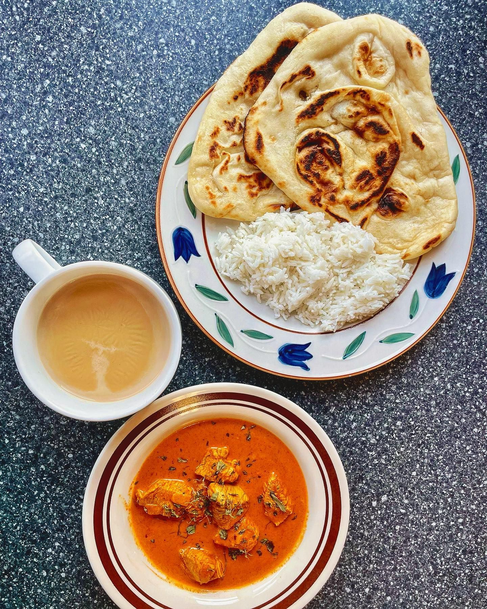

Deevani's Butter Chicken
Prepare a marinade of 1kg Chicken Breast (Cut into 1" pieces), ½ Cup 6% Plain Yoghurt, ¼ Cup Ginger-Garlic Paste, 2 Tbsp Kashmiri Chili Powder, 1 Tbsp Garam Masala, ½ Tsp Table Salt, and ½ Tsp Turmeric. Mix well and refrigerate for at least 30 minutes.
Heat ½ Cup Salted Butter in a large pot until it melts. Add 1 Diced White Onion, 1 Tbsp White Sugar, ½ Tbsp Garam Masala, 1 Tsp Cumin Seeds, 1 Tsp Kashmiri Chili Powder, and ½ Tsp Table Salt. Cook until the onion is soft and then add ⅔ Cup Tomato Paste and cook for 2-3 minutes.
Add 2 Cups 35% Cream and the marinade. Stir somewhat frequently and simmer until the colour darkens to a nice orange and the oils seep to the top, or about 25-30 minutes. Allow it to cool for 15 minutes before eating.
